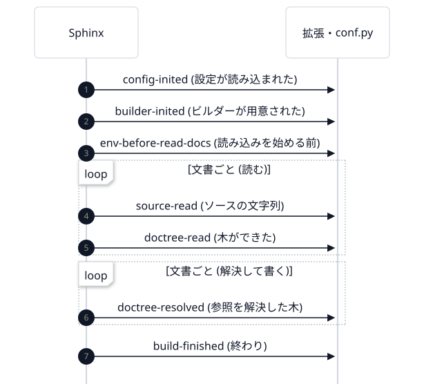
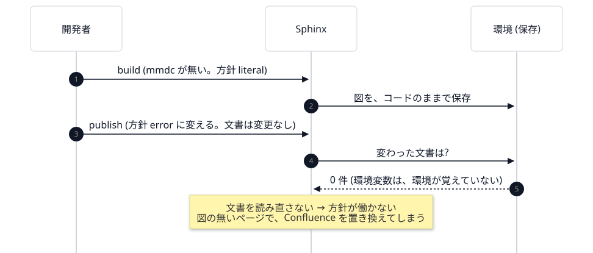

第 6 回 文書生成の基礎: Sphinx の考え方¶
所要時間の目安: 3.5 時間 / 前提: 第 1〜3 回 (第 4・5 回は、読まなくてもよい)
この回のゴール¶
文書のビルドが、読む → 解決する → 書く の 3 段階であることを説明できる。
doctree (文書の木) が、HTML や Confluence に 共通の中間表現 であることを説明できる。
reStructuredText と Markdown (MyST) の対応が分かり、読み書きできる。
ディレクティブ・ロール・相互参照 と、nitpicky の関係を説明できる。
環境 (キャッシュ) と、増分ビルドの仕組み、
-Eの意味を説明できる。autodoc と napoleon が、docstring から API 文書を作る流れを説明できる。
conf.pyとbuild_configを、読み解ける。
1. 文書のビルドとは¶
Sphinx は、文書の ビルドツール です。ソース (.rst・.md) を読み、HTML や Confluence 形式 などを出します。
コンパイラが、ソースコードを機械語に変えるのと同じ位置づけです。

大事なのは、真ん中の doctree です。ソースの種類 (reST でも Markdown でも docstring でも) は、 同じ形の木 に変わり、出力の種類 (HTML でも Confluence でも) は、その木から 作られます。 入口と出口が どちらも交換できる のは、この中間表現のおかげです。
2. 記法: reStructuredText と Markdown (MyST)¶
やりたいこと |
reStructuredText |
Markdown (MyST) |
|---|---|---|
見出し |
|
|
強調 / 太字 |
|
|
コード (行内) |
|
|
箇条書き |
|
|
コードブロック |
|
|
注意書き (ディレクティブ) |
|
|
相互参照 (ロール) |
|
|
別の文書へのリンク |
|
|
画像 |
|
|
Mermaid の図 |
|
|
Markdown は GitHub でもそのまま読める。この講義・保守ガイド・読み物の文書は、Markdown で書いています。
reST は表現力が高い (ディレクティブ・ロールが、素直に書ける)。API リファレンス (
docs/api.rst) は、reST です。MyST は、Markdown に ディレクティブとロール を足した拡張で、Sphinx が Markdown を読むために使います。
3. doctree を見る¶
docutils (Sphinx の土台) で、reST を読んで、木を 疑似 XML で見てみましょう。
# 実行できる
from docutils.core import publish_string
source = "題名\n====\n\n- 項目 *強調*\n- ``code``\n\n.. note:: 注意\n"
print(publish_string(source, writer_name="pseudoxml", settings_overrides={"report_level": 5}).decode())
# 出力
<document ids="section-1" names="題名" source="<string>" title="題名">
<title>
題名
<bullet_list bullet="-">
<list_item>
<paragraph>
項目
<emphasis>
強調
<list_item>
<paragraph>
<literal>
code
<note>
<paragraph>
注意
<document>が、全体の根。<title>・<bullet_list>・<note>が、構造を表す節 (ノード)。<paragraph>の中に、<emphasis>(強調)・<literal>(コード) が入っている。書式は、木の中の節 になっている。
次は、同じソース を、2 つの 出力 (writer) に渡します。
# 実行できる
from docutils.core import publish_string
source = "題名\n====\n\n*強調* と ``code`` を含む段落。\n"
settings = {"report_level": 5}
print(
publish_string(source, writer_name="html5", settings_overrides=settings)
.decode()
.split("<body>")[1]
.split("</body>")[0]
.strip()
)
print("-" * 20)
print(publish_string(source, writer_name="pseudoxml", settings_overrides=settings).decode().strip())
# 出力
<main id="section-1">
<h1 class="title">題名</h1>
<p><em>強調</em> と <span class="docutils literal">code</span> を含む段落。</p>
</main>
--------------------
<document ids="section-1" names="題名" source="<string>" title="題名">
<title>
題名
<paragraph>
<emphasis>
強調
と
<literal>
code
を含む段落。
同じ木から、HTML (<em>・<span class="pre">) も、疑似 XML も、出せました。
Confluence ビルダーも、同じ木から、Confluence のストレージ形式を出します。
4. Sphinx のビルドを、中から見る¶
Sphinx は、ビルドの途中で、決まった イベント を通知します。拡張や conf.py は、それを 受け取って 処理を足せます
(第 7 回)。実際に、どの順序で、何が起きるかを見てみましょう。
# 実行できる
import io
import re
import tempfile
from pathlib import Path
from sphinx.application import Sphinx
CONF = """
extensions = ["myst_parser"]
source_suffix = {".rst": "restructuredtext", ".md": "markdown"}
def setup(app):
def log(event, docname_at):
def handler(*args):
doc = args[docname_at] if docname_at is not None else ""
print(f" {event:22} {doc if isinstance(doc, str) else ''}")
app.connect(event, handler)
log("config-inited", None)
log("builder-inited", None)
log("env-before-read-docs", None)
log("source-read", 1) # (app, docname, source)
log("doctree-read", None)
log("doctree-resolved", 2) # (app, doctree, docname)
log("build-finished", None)
"""
with tempfile.TemporaryDirectory() as tmp:
root = Path(tmp)
(root / "conf.py").write_text(CONF, encoding="utf-8")
(root / "index.rst").write_text("題名\n====\n\n.. toctree::\n\n page\n", encoding="utf-8")
(root / "page.md").write_text("# ページ\n\n本文 {py:func}`os.getcwd` と `code`。\n", encoding="utf-8")
app = Sphinx(
str(root),
str(root),
str(root / "out"),
str(root / "doctrees"),
"dummy",
status=io.StringIO(),
warning=io.StringIO(),
)
app.build()
# 出力
config-inited
builder-inited
env-before-read-docs
source-read index
doctree-read
source-read page
doctree-read
doctree-resolved index
doctree-resolved page
build-finished
出力を、段階に分けて読みます。

イベント |
いつ |
DocsPipeline での使い道 |
|---|---|---|
|
設定 ( |
|
|
ビルダーの準備後 |
|
|
文書のソースを読んだ |
(使っていない) |
|
参照を解決した後 |
(使っていない) |
文書ごとに 起きるイベント (source-read など) の、index と page の順序に注目してください (ファイル名の順)。
拡張の中の処理 (たとえば、mermaid ディレクティブの実行) は、source-read と doctree-read の間、つまり
文書を読んでいる最中 に起きます。
5. 環境と、増分ビルド¶
毎回、全ての文書を読み直すと、大きな文書は遅くなります。Sphinx は、読んだ結果 (環境: 全文書の木・参照の表など) を、
doctrees/ に 保存 し、次のビルドでは、変わった文書だけ を読みます (増分ビルド)。
# 実行できる
import io
import re
import tempfile
from pathlib import Path
from sphinx.application import Sphinx
def build(root, **kwargs):
status = io.StringIO()
app = Sphinx(
str(root),
str(root),
str(root / "out"),
str(root / "doctrees"),
"dummy",
status=status,
warning=io.StringIO(),
**kwargs,
)
app.build()
plain = re.sub(r"\x1b\[[0-9;]*m", "", status.getvalue())
return [line for line in plain.splitlines() if line.startswith("updating environment")][0]
with tempfile.TemporaryDirectory() as tmp:
root = Path(tmp)
(root / "conf.py").write_text('extensions = ["myst_parser"]\n', encoding="utf-8")
(root / "index.md").write_text("# 題名\n\n本文。\n", encoding="utf-8")
print("1 回目 :", build(root))
print("2 回目 :", build(root)) # 変更なし
(root / "index.md").write_text("# 題名\n\n本文を変えた。\n", encoding="utf-8")
print("文書を変更 :", build(root))
print("-E (freshenv):", build(root, freshenv=True)) # 保存した環境を使わない
# 出力
1 回目 : updating environment: [new config] 1 added, 0 changed, 0 removed
2 回目 : updating environment: 0 added, 0 changed, 0 removed
文書を変更 : updating environment: 0 added, 1 changed, 0 removed
-E (freshenv): updating environment: [new config] 1 added, 0 changed, 0 removed
2 回目:
0 added, 0 changed― 何も読み直さない。速い。文書を変更: 変わった 1 件だけを読み直す。
-E(freshenv=True): 保存した環境を 捨てて、全部を読み直す。
設定が変わったら¶
設定値 (add_config_value) は、変更が、どこに影響するか を、第 3 引数で宣言します。
第 3 引数 |
意味 |
|---|---|
|
変わったら、全文書を読み直す (木の中身に影響する設定) |
|
変わったら、HTML を 書き直す だけ (読み直しは不要) |
|
再ビルドは不要 |
# 実行できる
import io
import re
import tempfile
from pathlib import Path
from sphinx.application import Sphinx
CONF = 'extensions = []\ndef setup(app):\n app.add_config_value("greeting", "こんにちは", "env")\n'
def build(root, **kwargs):
status = io.StringIO()
Sphinx(
str(root),
str(root),
str(root / "out"),
str(root / "doctrees"),
"dummy",
status=status,
warning=io.StringIO(),
**kwargs,
).build()
plain = re.sub(r"\x1b\[[0-9;]*m", "", status.getvalue())
return [line for line in plain.splitlines() if line.startswith("updating environment")][0]
with tempfile.TemporaryDirectory() as tmp:
root = Path(tmp)
(root / "conf.py").write_text(CONF, encoding="utf-8")
(root / "index.rst").write_text("題名\n====\n", encoding="utf-8")
print(build(root))
print(build(root))
print(build(root, confoverrides={"greeting": "こんばんは"})) # 設定値だけを変える
# 出力
updating environment: [new config] 1 added, 0 changed, 0 removed
updating environment: 0 added, 0 changed, 0 removed
updating environment: [config changed ('greeting')] 1 added, 0 changed, 0 removed
設定を変えると、文書は変わっていないのに、[config changed ('greeting')] として、全部が読み直されます。
環境変数は、環境の外にある¶
ここに、落とし穴 があります。環境が覚えているのは、設定値 であって、環境変数 ではありません。
DocsPipeline の mermaid 拡張は、DOCSPIPELINE_MERMAID_MISSING=error (mmdc が無ければ失敗) という 環境変数 で、
方針を切り替えます。ところが、増分ビルド では、こうなります。

実際に起きうる事故でした (レビューで見つかりました)。対策は、公開系のモードでは、-E (保存した環境を使わない) を付けることです。
docspipeline publish --mode dryrun|publish と docspipeline build --require-mermaid は、-E を付けて、全部を読み直します。
教訓: 「ビルドの結果に影響する入力」が、環境の外 (環境変数・ファイル・時刻) にあるなら、 増分ビルドの キャッシュは、それを知らない。その入力が、方針を決めるなら、キャッシュを 使わない か、 設定値にして、環境に覚えさせる かを、選びます。
6. ディレクティブ・ロール・相互参照¶
文書の中の 特別な記法 は、2 種類あります。
種類 |
範囲 |
例 |
書き方 (reST / MyST) |
|---|---|---|---|
ディレクティブ |
ブロック (段落の単位) |
|
|
ロール |
行内 |
|
|
相互参照 (ロール) は、2 段階 で処理されます。
読むとき:
pending_xref(未解決の参照) という節を、木に置く。まだ、参照先は分からない。解決するとき: 全文書の木が揃ってから、参照先を探し、リンクに置き換える。
前の節の木を、もう一度見てみましょう ({py:func} が、どう木に入るか)。
# 実行できる
import io
import tempfile
from pathlib import Path
from sphinx.application import Sphinx
def outline(node, depth=0):
for child in node.children:
name = type(child).__name__
print(" " * depth + name + (f" {child.astext()!r}" if name == "Text" else ""))
outline(child, depth + 1)
with tempfile.TemporaryDirectory() as tmp:
root = Path(tmp)
(root / "conf.py").write_text('extensions = ["myst_parser"]\n', encoding="utf-8")
(root / "index.md").write_text("# ページ\n\n本文 {py:func}`os.getcwd` と `code`。\n", encoding="utf-8")
app = Sphinx(
str(root),
str(root),
str(root / "out"),
str(root / "doctrees"),
"dummy",
status=io.StringIO(),
warning=io.StringIO(),
)
app.build()
outline(app.env.get_doctree("index"))
# 出力
section
title
Text 'ページ'
paragraph
Text '本文 '
pending_xref
literal
Text 'os.getcwd()'
Text ' と '
literal
Text 'code'
Text '。'
pending_xref が、段落の中に入っています。読み込み時点では、os.getcwd が何かは、誰も知りません。
nitpicky: 解決できない参照を、警告にする¶
既定では、解決できない参照は、黙って普通の文字 になります。nitpicky = True にすると、警告 になります。
-W(警告をエラー扱い) と組み合わせると、壊れた参照を、CI で止められる。標準ライブラリの型 (
pathlib.Path) のような、他の文書にある対象 は、intersphinx (他の文書の目次を取り込む仕組み) で解決する。 外部につなげない環境では使えないので、DOCSPIPELINE_OFFLINE=1で、nitpicky ごと切る。
7. autodoc と napoleon: docstring から API 文書を作る¶

autodoc は、Python のコードを
importして、__doc__と、関数のシグネチャ (型ヒントを含む) を読み、 文書の中に差し込みます。だから、docstring の無い関数は、文書に載りません (第 4 回で、これを検出する道具を作りました)。autodoc は
importする (実行する) ので、import houのように、環境が無いと読み込めないものは、 スタブ で補います (use_hou_stub)。napoleon は、Google 形式 (
Args:・Returns:) の docstring を、reST (:param x:) に変換します。 人が読みやすい形で書き、Sphinx が理解できる形に直してもらう、という分担です。
変換の様子を、本物の docstring で見ます。
# 実行できる
import inspect
from sphinx.ext.napoleon import Config
from sphinx.ext.napoleon.docstring import GoogleDocstring
from docspipeline.docstring_coverage import scan_file
config = Config(napoleon_use_param=True, napoleon_use_rtype=False)
print("--- 元の docstring ---")
print(inspect.getdoc(scan_file))
print("--- napoleon が出す reST ---")
print(GoogleDocstring(inspect.getdoc(scan_file), config))
# 出力
--- 元の docstring ---
1 ファイルの公開 API を調べる。
Args:
path: Python のソースファイル。
module_name: 結果に使うモジュール名。省略するとファイル名から付ける。
Returns:
見つかった項目。
Raises:
ValueError: ファイルが構文エラーのとき (ファイル名と行を含む)。
--- napoleon が出す reST ---
1 ファイルの公開 API を調べる。
:param path: Python のソースファイル。
:param module_name: 結果に使うモジュール名。省略するとファイル名から付ける。
:returns: 見つかった項目。
:raises ValueError: ファイルが構文エラーのとき (ファイル名と行を含む)。
Google 形式 |
変換後 (reST) |
|---|---|
|
|
|
|
|
|
8. conf.py と build_config¶
Sphinx の設定は、conf.py (Python のファイル) に書きます。Sphinx は、これを 実行して、その 変数 を設定として読みます。
設定が多く、リポジトリごとに同じ内容を書くと、直したいとき、全部を直す羽目になります。
そこで、共通の設定を build_config に集め、各リポジトリの conf.py は、名前と場所だけ にしました。
# 抜粋ファイル: docs/conf.py
from docspipeline.config import build_config
config = build_config(
confdir=__file__,
project="DocsPipeline",
author="manato1201",
package_paths=["../"],
license_note="参照した外部の資料は、構造と考え方だけを取り入れ、コード・画像・文章は写していません。",
)
# Sphinx / docutils の型は、この文書では解説しない (リンク先を持たない) ので警告から外す
config["nitpick_ignore_regex"] += [(r"py:.*", r"(sphinx|docutils)(\..*)?")]
globals().update(config)
build_config(...)は 辞書 を返す。config["nitpick_ignore_regex"] += ...: 戻ってきた辞書を、各リポジトリが調整できる (追記・上書き)。globals().update(config): 辞書の中身を、conf.pyの 変数 として登録する。Sphinx は、これを設定として読む。
build_config を読む¶
# 引用: docspipeline/config.py::build_config
def build_config(
*,
confdir: str | Path,
project: str,
author: str,
release: str = "",
language: str = "ja",
package_paths: list[str | Path] | None = None,
mock_imports: list[str] | None = None,
use_hou_stub: bool = False,
cpp_sources: list[str | Path] | None = None,
cpp_predefined: list[str] | None = None,
license_note: str = "",
extra_extensions: list[str] | None = None,
) -> dict[str, Any]:
"""Sphinx の設定を辞書で返す。
Args:
confdir: ``conf.py`` の場所。``__file__`` をそのまま渡してよい。
project: 文書の題名 (プロジェクト名)。
author: 著作者名。
release: バージョン表記。
language: 文書の言語。
package_paths: autodoc が ``import`` できるようにする Python のソースの場所
(``confdir`` からの相対パス)。
mock_imports: autodoc のときだけ偽物に差し替えるモジュール名。
use_hou_stub: Houdini の ``hou`` が無い環境用のスタブを使うか。
本物の ``hou`` が ``import`` できる環境では、そちらが優先される。
cpp_sources: Doxygen に読ませる C++ のソースの場所 (``confdir`` からの相対パス)。
指定すると Breathe と :mod:`docspipeline.doxygen` を有効にする。
cpp_predefined: Doxygen のマクロ定義 (``PREDEFINED``)。
license_note: 出典・ライセンスの注記。HTML のフッターと Confluence の各ページ末尾に固定する。
extra_extensions: 追加の Sphinx 拡張。
Returns:
``conf.py`` の名前空間へ ``update`` する設定の辞書。
"""
confdir = Path(confdir).resolve()
if confdir.is_file():
confdir = confdir.parent
offline = is_offline()
for path in _resolve(confdir, package_paths or []):
if str(path) not in sys.path:
sys.path.insert(0, str(path))
if use_hou_stub and str(STUBS_DIR) not in sys.path:
# 末尾に足す。Houdini の中で動かすときは、本物の hou が先に見つかる。
sys.path.append(str(STUBS_DIR))
extensions = [
"sphinx.ext.autodoc",
"sphinx.ext.napoleon",
"myst_parser",
"docspipeline.guard",
"docspipeline.mermaid",
"docspipeline.prompt",
]
if not offline:
extensions.append("sphinx.ext.intersphinx")
if cpp_sources:
extensions += ["breathe", "docspipeline.doxygen"]
if _has_module("sphinxcontrib.confluencebuilder"):
extensions.append("sphinxcontrib.confluencebuilder")
extensions += extra_extensions or []
# 本物を import できない (偽物にしている) モジュールは、継承元などの参照が解決できない。
# nitpicky の警告から外す。
faked = list(mock_imports or []) + (["hou"] if use_hou_stub else [])
nitpick_ignore_regex = [(r"py:.*", rf"{re.escape(name)}(\..*)?") for name in faked]
year = date.today().year
copyright_text = f"{year}, {author}"
if license_note:
copyright_text += f"。{license_note}"
cfg: dict[str, Any] = {
"project": project,
"author": author,
"copyright": copyright_text,
"release": release,
"language": language,
"extensions": extensions,
"source_suffix": {".rst": "restructuredtext", ".md": "markdown"},
"exclude_patterns": ["_build", "_doxygen", "_generated", "Thumbs.db", ".DS_Store", "*.tmpl"],
# 未解決の参照を警告にする。-W と組み合わせて、リンク切れを CI で止める。
"nitpicky": not offline,
"nitpick_ignore_regex": nitpick_ignore_regex,
# autodoc / napoleon (Google 形式の docstring)
"autodoc_default_options": {
"members": True,
"show-inheritance": True,
"member-order": "bysource",
},
"autodoc_typehints": "description",
"autodoc_mock_imports": list(mock_imports or []),
"napoleon_google_docstring": True,
"napoleon_numpy_docstring": False,
# 既存の Markdown 文書の再利用
"myst_enable_extensions": ["colon_fence", "deflist"],
"myst_heading_anchors": 3,
# ```mermaid の囲みを docspipeline.mermaid の指示子として扱う
"myst_fence_as_directive": ["mermaid"],
# 見た目
"html_theme": "furo",
"html_title": project,
}
if not offline:
cfg["intersphinx_mapping"] = {"python": ("https://docs.python.org/3", None)}
if cpp_sources:
slug = project.replace(" ", "_")
cfg["docspipeline_doxygen_project"] = slug
cfg["docspipeline_doxygen_inputs"] = [str(p) for p in _resolve(confdir, list(cpp_sources))]
cfg["docspipeline_doxygen_predefined"] = list(cpp_predefined or [])
cfg["docspipeline_doxygen_output"] = str(confdir / "_doxygen")
cfg["breathe_projects"] = {slug: str(confdir / "_doxygen" / "xml")}
cfg["breathe_default_project"] = slug
cfg["breathe_domain_by_extension"] = {"h": "cpp", "hpp": "cpp", "hh": "cpp"}
footer = _write_confluence_footer(confdir, license_note) if license_note else None
try:
cfg.update(confluence.sphinx_settings(footer_file=footer))
except confluence.ConfluenceSettingsError as exc:
# conf.py の中で例外にすると、Sphinx はスタックトレースつきの内部エラーとして出す。
# 公開しない設定のまま、メッセージを docspipeline.guard に渡して、整った形で失敗させる。
cfg.update(confluence.sphinx_settings({}, footer_file=footer))
cfg["docspipeline_config_error"] = str(exc)
return cfg
大きな 5 つの塊に分けて読みます。
(1) 準備: sys.path
# 抜粋: docspipeline/config.py::build_config
for path in _resolve(confdir, package_paths or []):
if str(path) not in sys.path:
sys.path.insert(0, str(path))
if use_hou_stub and str(STUBS_DIR) not in sys.path:
# 末尾に足す。Houdini の中で動かすときは、本物の hou が先に見つかる。
sys.path.append(str(STUBS_DIR))
autodoc が
importできるよう、利用者のソースの場所を、sys.pathの先頭 に足す (自分のコードを、優先して見つけさせる)。houのスタブは、末尾。import houは、sys.pathを 先頭から 探すので、本物があれば、本物が先 に見つかる。if ... not in sys.path: 何度呼ばれても、重複して足さない (冪等)。
(2) 拡張の一覧
# 抜粋: docspipeline/config.py::build_config
extensions = [
"sphinx.ext.autodoc",
"sphinx.ext.napoleon",
"myst_parser",
"docspipeline.guard",
"docspipeline.mermaid",
"docspipeline.prompt",
]
if not offline:
extensions.append("sphinx.ext.intersphinx")
if cpp_sources:
extensions += ["breathe", "docspipeline.doxygen"]
if _has_module("sphinxcontrib.confluencebuilder"):
extensions.append("sphinxcontrib.confluencebuilder")
extensions += extra_extensions or []
常に入れる もの (autodoc・napoleon・MyST と、自前の 3 つ)、条件つき のもの (オフラインでない・C++ がある・ビルダーが入っている) に分けている。
_has_module: 入っていれば使う (任意の依存)。入っていなくても、HTML のビルドは、動く。
(3) 設定の辞書: source_suffix (.rst と .md を両方読む)・nitpicky (オフラインなら切る)・
autodoc のオプション・myst_fence_as_directive = ["mermaid"] (```mermaid を、自前の指示子に渡す)・テーマ。
(4) C++ の設定: cpp_sources があるときだけ、Doxygen と Breathe の設定を足す。
(5) Confluence の設定と、エラーの先送り
# 抜粋: docspipeline/config.py::build_config
try:
cfg.update(confluence.sphinx_settings(footer_file=footer))
except confluence.ConfluenceSettingsError as exc:
# conf.py の中で例外にすると、Sphinx はスタックトレースつきの内部エラーとして出す。
# 公開しない設定のまま、メッセージを docspipeline.guard に渡して、整った形で失敗させる。
cfg.update(confluence.sphinx_settings({}, footer_file=footer))
cfg["docspipeline_config_error"] = str(exc)
conf.py の中で例外を投げると、Sphinx は スタックトレースつきの、分かりにくいエラー にします。
そこで、設定の誤りは、安全な設定 (公開しない) に差し替えて、メッセージを docspipeline_config_error に預け、
後で、guard 拡張が config-inited のイベントで、整った形で 失敗させます (第 7 回)。
「失敗させる場所を、選ぶ」設計 です。
実際に呼んで、結果を見ます。
# 実行できる
import os
import tempfile
from pathlib import Path
os.environ["DOCSPIPELINE_OFFLINE"] = "1"
from docspipeline.config import build_config
with tempfile.TemporaryDirectory() as tmp:
config = build_config(confdir=tmp, project="サンプル", author="me", cpp_sources=["../include"])
keep = ("sphinx.", "myst", "breathe", "docspipeline.")
print("拡張:", [e for e in config["extensions"] if e.startswith(keep)])
print("nitpicky:", config["nitpicky"], "/ テーマ:", config["html_theme"])
print("source_suffix:", config["source_suffix"])
print("confluence_publish:", config["confluence_publish"])
print("doxygen の入力:", [Path(p).name for p in config["docspipeline_doxygen_inputs"]])
# 出力
拡張: ['sphinx.ext.autodoc', 'sphinx.ext.napoleon', 'myst_parser', 'docspipeline.guard', 'docspipeline.mermaid', 'docspipeline.prompt', 'breathe', 'docspipeline.doxygen']
nitpicky: False / テーマ: furo
source_suffix: {'.rst': 'restructuredtext', '.md': 'markdown'}
confluence_publish: False
doxygen の入力: ['include']
オフラインなので、
intersphinxが入らず、nitpickyがFalse。cpp_sourcesを渡したので、breatheとdocspipeline.doxygenが入る。confluence_publishはFalse(既定のlocalモード。第 9 回)。
9. ビルダー: 同じ木を、別の形で出す¶
# 実行できる
import io
import re
import tempfile
from pathlib import Path
from sphinx.application import Sphinx
with tempfile.TemporaryDirectory() as tmp:
root = Path(tmp)
(root / "conf.py").write_text('html_theme = "basic"\nextensions = ["myst_parser"]\n', encoding="utf-8")
(root / "index.md").write_text("# 題名\n\n- 項目 **太字**\n- `code`\n", encoding="utf-8")
for builder, name in (("text", "index.txt"), ("html", "index.html")):
Sphinx(
str(root),
str(root),
str(root / builder),
str(root / "doctrees"),
builder,
status=io.StringIO(),
warning=io.StringIO(),
).build()
print("--- text ---")
print((root / "text" / "index.txt").read_text(encoding="utf-8").strip())
print("--- html (箇条書きの部分) ---")
html = (root / "html" / "index.html").read_text(encoding="utf-8")
print(re.search(r'<ul class="simple">.*?</ul>', html, re.S).group(0))
# 出力
--- text ---
題名
****
* 項目 **太字**
* "code"
--- html (箇条書きの部分) ---
<ul class="simple">
<li><p>項目 <strong>太字</strong></p></li>
<li><p><code class="docutils literal notranslate"><span class="pre">code</span></code></p></li>
</ul>
同じソースから、テキスト と HTML が出ました。Confluence も、同じです (ビルダー を、confluence にするだけ)。
ハンズオン¶
docs/をdocspipeline build docsでビルドし、もう一度 ビルドして、2 回目が速いことを確かめる。docs/_build/.doctreesが、環境の保存先 です。docspipeline build docs --require-mermaidを 2 回実行し、毎回、全部を読み直す (-E) ことを、ログで確かめる。docs/design.mdの一部の文を変えて、docspipeline build docsを実行する。読み直された文書の数 を見る。
確認問題¶
Sphinx のビルドの 3 段階を、順に言ってください。
doctree が、中間表現であることの利点は何ですか。
pending_xrefとは何ですか。なぜ、読む段階では、解決できない のですか。増分ビルドで、2 回目のビルドが速いのは、なぜですか。環境変数が変わったとき、何が起きますか。
add_config_value("x", 1, "env")の"env"は、何を意味しますか。autodoc が、docstring の無い関数を、文書に載せないのは、なぜですか。
build_configが、辞書を返す (globals().updateを内側で呼ばない) 設計の利点は何ですか。(書く問題) Sphinx の API で、
index.mdだけの小さなプロジェクトをdummyビルダーでビルドし、indexの doctree に、段落 (paragraph) が何個あるか を数えて表示してください。
解答¶
① 読む (パーサーが、ソースから doctree を作る)、② 解決する (参照・目次をつなぐ)、③ 書く (ビルダーが、出力する)。
ソースの種類 (reST・Markdown・docstring) と、出力の種類 (HTML・Confluence・テキスト) を、独立に増やせる。 入口が N 種類、出口が M 種類でも、作るのは、N + M 個で足りる (N × M 個ではない)。
「どこかを指す参照」を、木の中に置いた、未解決の印。参照先 (別の文書・別の関数) が、まだ読まれていないかもしれない (全文書を読み終えて、初めて、参照先の一覧が揃う) ので、読む段階では解決できず、解決する段階まで、待つ。
保存した 環境 (全文書の木) を、再利用して、変わった文書だけ を読み直すから。 環境変数は、環境が 覚えていない ので、変わっても、文書が変わっていなければ、読み直されない (方針が働かない)。 →
-Eで、環境を使わずに、全部を読み直す。その設定値が変わったら、全文書を読み直す (木の中身に影響する設定である)、という宣言。
"html"なら、HTML の書き直しだけ。autodoc は、
__doc__(docstring) を材料に、文書を作る。材料が無ければ、書くことがない (既定では、undoc-membersが偽)。 だから、docstring_coverageのような、別の検査 が要る。各リポジトリが、受け取った辞書を、調整できる (追記・上書き・条件による差し替え)。 内側で
globals().updateを呼ぶと、呼ぶ側が、値を直す機会を失い、また、build_configが、conf.pyの 名前空間に依存 してしまう (テストしにくい)。辞書を返す関数は、純粋 で、単体でテストできる。例 (実行して確かめてある):
# 実行できる
import io
import tempfile
from pathlib import Path
from docutils import nodes
from sphinx.application import Sphinx
with tempfile.TemporaryDirectory() as tmp:
root = Path(tmp)
(root / "conf.py").write_text('extensions = ["myst_parser"]\n', encoding="utf-8")
(root / "index.md").write_text("# 題名\n\n一つ目の段落。\n\n二つ目の段落。\n\n- 項目\n", encoding="utf-8")
app = Sphinx(
str(root),
str(root),
str(root / "out"),
str(root / "doctrees"),
"dummy",
status=io.StringIO(),
warning=io.StringIO(),
)
app.build()
doctree = app.env.get_doctree("index")
print(len(list(doctree.findall(nodes.paragraph))), "個")
# 出力
3 個
(箇条書きの項目も、中身は paragraph なので、3 個になります。)
まとめ¶
概念 |
要点 |
このリポジトリでの例 |
|---|---|---|
3 段階 |
読む → 解決 → 書く |
Sphinx のビルド |
doctree |
入口と出口に共通の中間表現 |
reST / Markdown → HTML / Confluence |
イベント |
ビルドの途中の合図。拡張が受け取る |
|
環境と増分ビルド |
読んだ結果を保存し、変わった所だけ読む |
|
環境の外の入力 |
キャッシュは、環境変数を知らない |
公開系モードの |
ロールと相互参照 |
読む段階で |
|
autodoc / napoleon |
|
API リファレンス |
|
共通設定を、辞書を返す関数に集める |
|
次回¶
第 7 回 Sphinx 拡張を作る: ディレクティブとイベントで、Sphinx に機能を足します。